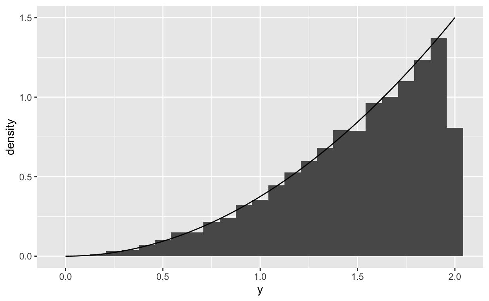

Random Variables and Probability Distributions
Last week we looked at probability and random variables, this week we turn our atention to probability distributions and probability mass and probability density functions.
Discrete Random Variables
Discrete random variables are that take on values in \(\mathbb{N}_0\) i.e. non-negative integer values. These kinds of random variables arise from counting processes for different situations. The distribution of discrete variables that take on a finite number of discrete values can often be described using a simple table, but in some cases, for discrete variables, their behaviour is described by a probability mass function (pmf) \(p(\cdot)\)
probability mass functions describe the probability of outcomes for discrete random variables, or variables that take on values from a finite or countably infinite sample space. The probability mass function is typically written as \(p(x)\) where \[ p(x)= Pr(X=x). \] All the same constraints that apply to probabilities also apply to the pmf, i.e. \[ \begin{align} p(x)&>0,\,\forall x\in X\\ \sum_{x\in X} p(x)&=1. \end{align} \]
The expected value or mean of a random variable with a probability mass function over sample space \(S\) is defined as \[ \mu = E(X)=\sum_S xp(x) \] or the weighted average of all possible values of \(X\) weighted by their probabilities.
The median of a random variable with a probability mass function is \[ \mbox{median of $X$}=\left\{x\in S\mid Pr(X\leq x)\geq \frac{1}{2},\, Pr(X\geq x)\geq \frac{1}{2} \right\}. \]
The mode of a random variable is \[ \mbox{mode of $X$}=\max_{x\in S} p(x) \]
Quantiles can be calculated in a similar fashion to the median.
The variance of a random variable is derived from the definition of expected value, as the expected squared distance from the mean. \[ \mbox{Var}(X)=E[(X-\mu)^2] =\sum_S(x-\mu)^2p(x) \]
Probability distributions are parametrised with terms that can be written as functions of the mean and variance, which can make interpreting the parameters and the random variable easier.
Bernoulli Random Trials and The Binomial Probability Distribution
A Bernoulli random trial is an experiment with a dichotomous outcome and a single probability assigned to a positive outcome. The simplest example of a Bernoulli trial is a coin toss. In general terms, the probability mass function of a Bernoulli random variable is written \[ p(x) =\left\{ \begin{array}{rc} p,& x = 1\\ 1-p, & x = 0. \end{array} \right. \] The expected value of a Bernoulli random variable is \(p\), and the variance is \(p(1-p)\).
The Binomial Probability Distribution
Defining \(X\) as the sum on \(n\) independent Bernoulli trials each with the probability of success \(p\), i.e. \(X\) is the number of ``successes’’ in \(n\) attempts, the binomial probability distribution is defined as \[ p(x) = {n\choose x}p^x(1-p)^{n-x}. \] This is called the binomial distribution because it includes the binomial coefficient \[ {n\choose x} = \frac{n!}{(n-x)!x!} \] to compute the number of possible combinations of successes and failures times the joint probability of \(x\) successes and \(n-x\) failures.
Example
For \(X\sim Binom(10,0.3)\) find: \[ Pr(X=4) \] and \[ Pr(X<8) \]
Solution:
\[
\begin{align}
Pr(X=x)&={n\choose x}p^x(1-p)^{n-x}\\
Pr(X=4)&={10 \choose 4}(0.3)^4(1-0.3)^{10-4}\\
&=210(0.3)^4(0.7)^6\\
&=210(0.0081)(0.117649)\\
&=0.2001209
\end{align}
\]
dbinom(4, size = 10, prob = 0.3)
#> [1] 0.2001209\[ \begin{align} Pr(X<8)&=1-Pr(X=8)+Pr(X=9)+Pr(X=10)\\ &=\left[{10 \choose 8}(0.3)^8(0.7)^2\right]+\left[{10 \choose 9}(0.3)^9(0.7)^1\right]+\left[{10\choose 19}(0.3)^10(0.7)^0\right]\\ &=0.9984096 \end{align} \]
1-dbinom(8, size = 10, prob = 0.3)-dbinom(9, size = 10, prob = 0.3)-dbinom(10, size = 10, prob = 0.3)
#> [1] 0.9984096
pbinom(7,size = 10, prob = 0.3)
#> [1] 0.9984096The Poisson Probability Distribution
Consider a random variable \(X\) that follows a binomial probability distribution, then if we define \(\lambda = np\) then the limit as \(n\rightarrow\infty\) and \(p\rightarrow 0\) is the Poisson probability distribution with rate \(\lambda\). The derivation is as follows: \[\begin{eqnarray*} p(x)&=&\frac{n!}{(n-x)!x!}\left(\frac{\lambda}{n}\right)^x\left(1-\frac{\lambda}{n}\right)^{n-x}\\ &=&\frac{\lambda^x}{x!}\frac{n!}{(n-x)!}\frac{1}{n^x}\left(1-\frac{\lambda}{n}\right)^n\left(1-\frac{\lambda}{n}\right)^{-x}. \end{eqnarray*}\] As \(n\rightarrow \infty\) \[\begin{eqnarray*} \left(1-\frac{\lambda}{n}\right)^n&\rightarrow&e^{-\lambda} \end{eqnarray*}\] the term \[ \frac{\lambda^x}{x!} \] remains constant, and the remaining terms go to \(1\), leaving \[\begin{eqnarray*} p(x)=\frac{\lambda^xe^{-\lambda}}{x!}, \end{eqnarray*}\] and the mean and the variance of \(X\) is \(\lambda\).
Note that for large \(n\) and small \(p\) we can approximate the binomial distribution as a Poisson distribution with \(\lambda = np\).
Example
For \(X\sim Pois(4.5)\) find \[ Pr(X=3) \] and \[ Pr(X>3) \]
Solution:
\[
\begin{align}
Pr(X=x)&=\frac{\lambda^xe^{-\lambda}}{x!}\\
Pr(X=3)&=\frac{(4.5)^3e^{-4.5}}{3!}\\
&=\frac{(91.25)(0.011109)}{6}\\
&=0.1687179
\end{align}
\]
dpois(3,4.5)
#> [1] 0.1687179\[ \begin{align} Pr(X>3)&=1-\left\{Pr(X=0)+Pr(X=1)+Pr(X=2)+Pr(X=3)\right\}\\ &=1-\left\{\frac{4.5^0e^{-4.5}}{0!}+\frac{4.5^1e^{-4.5}}{1!}+\frac{4.5^2e^{-4.5}}{2!}+\frac{4.5^3e^{-4.5}}{3!} \right\}\\ &=1-e^{-4.5}\left\{\frac{4.5^0}{0!}+\frac{4.5^1}{1!}+\frac{4.5^2}{2!}+\frac{4.5^3}{3!} \right\}\\ &=1- 0.011109 0.0499905 0.1124786 0.1687179 \\ &=1- 0.342296 \\ &=0.657704 \end{align} \]
1-dpois(0,4.5)-dpois(1,4.5)-dpois(2,4.5)-dpois(3,4.5)
#> [1] 0.657704
1-ppois(3,4.5)
#> [1] 0.657704
ppois(3,4.5, lower.tail = FALSE)
#> [1] 0.657704Continuous Random Variables
Continuous random variables are random variables that take on values in \(\mathbb{R}\), i.e. real-valued measures that can be used to represent a distance along a line or that can be represented as as an infinite decimal expansion.
Probability Density Functions
Continuous random variables are described by a probability density function (pdf). The pdf describes the density of possible values for a continuous random variable, and does not define the probability of any specific value. Indeed, for a continuous random variable \(Y\) with sample space \(S\), \(Pr(Y=y)=0,\forall y\in S\). Instead the probability density function \(f\) is a non-negative function subject to the constraints \[\begin{eqnarray*} f(y)&\neq& Pr(Y=y)\\ f(y)&\geq& 0\, \forall\, y\in S\\ \int_{-\infty}^{\infty}f(u)du &=& 1. \end{eqnarray*}\] Because \(Pr(Y=y)=0\), or is undefined then for continuous random variables, then probability can only be defined for events \[ Pr(a\leq y \leq b)=\int_a^bf(y)dy. \]
Example
Are the following functions valid pdfs? \[ f(y) = y/2,\,0<y<2 \] and \[ f(y) = \sin y,\,0<y<\pi. \]
Solution:
In the first instance we can see that for \(0<y<2\) the function \(y/2>0\), so we check the additional requirement \[
\begin{align}
\int_{0}^2\frac{y}{2}dy&=\frac{y^2}{4}\Bigg|_0^2\\
&=\frac{(2)^2}{4}-\frac{(0)^2}{4}\\
&=1
\end{align}
\] so the pdf \(f(y)=y/2,\:0<y<2\) is a valid pdf.
The function \(f(y) =\sin\ y,\:0<y<\pi\) does satisfy the condition that \(f(y)>0,\;\forall y\in Y\), but \[ \begin{align} \int_0^\pi \sin\ y\ dy&=-\cos\ y\Bigg|_0^{\pi}\\ &=\cos 0-\cos \pi\\ &=1+1=2 \end{align} \] so this is not a valid pdf.
Cumulative Mass and Density Functions
The cumulative mass or density function can be defined for both discrete and continuous random variables. In the discrete case, the cumulative mass function (cmf) is defined as \[ F(x) =Pr(X\leq x) = \sum_{-\infty}^xp(x) \] in the continuous case the cumulative density function is
\[ F(y) = Pr(Y\leq y) = \int_{-\infty}^yf(u)du \] using the cmf or cdf probability for any subset can be defined \[ Pr(a\leq x \leq b) = F(b)-F(a). \] Note that the connection between the pdf and cdf can be written as the differential equation \[ \frac{dF}{dy}=f(y). \]
Example
Find the cdf for the pdf \[ f(y) = e^{-y},\ y>0. \]
Solution:
The cdf is \[
F(y)=\int_{-\infty}^yf(u)\ du
\] hence \[
\begin{align}
F(y)&=\int_{0}^ye^{-u}\ du\\
&=-e^{-u}\Bigg|_0^y\\
&=e^{0}-e^{-y}\\
&=1-e^{-y}.
\end{align}
\]
Expectation and Variance of Continuous Probability Distributions
The expected value and variance for continuous random variables are defined based on the probability density function \[ E(Y) = \int_{-\infty}^\infty yf(y)dy \] and \[ \mbox{Var}(Y) = \int_{-\infty}^\infty(y-E(Y))^2f(y)dy. \] The median and mode are more formally defined for continuous random variables as \[ \mbox{median}=\left\{y:\int_{-\infty}^yf(u)du = \frac{1}{2}\right\} \] and \[ \mbox{mode}=\max_yf(y)\mbox{ or }\left\{y:\frac{d}{dy}f(y)=0\right\} \]
Example
Find the expected value and variance of \(Y\) where \[ f(y) = \frac{3y^2}{8},\,0<y<2 \]
Solution:
The expected value is \[
\begin{align}
E(Y)&=\int_Yyf(y)\ dy\\
&=\int_0^2y\frac{3y^2}{8}\ dy\\
&=\frac{3}{8}\int_0^2y^3\ dy\\
&=\frac{3}{8}\left[\frac{y^4}{4}\Bigg|_0^2\right]\\
&=\frac{3}{8}\left[\frac{2^4}{4}-\frac{0^4}{4}\right]\\
&=\frac{3}{8}\frac{16}{4}=\frac{3}{2}
\end{align}
\] Variance is \(E\left((y-E(Y))^2\right)\) or \[
\operatorname{Var}(Y)=\int_Y(y-E(Y))^2f(y)\ dy
\] for computational simplicity this is equivalent to \[
\operatorname{Var}(Y)=E(Y^2)-\left(E(Y)\right)^2
\] So we can find the variance by finding \(E\left(Y^2\right)\). \[
\begin{align}
E\left(Y^2\right)&=\int_0^2y^2\frac{3y^2}{8}\ dy\\
&=\frac{3}{8}\int_0^2y^4\ dy\\
&=\frac{3}{8}\left[\frac{y^5}{5}\Bigg|_0^2\right]\\
&=\frac38\left[\frac{2^5}{5}-\frac{0^5}{5}\right]\\
&=\frac38\frac{32}{5}=\frac{12}{5}
\end{align}
\] thus the variance is \[
\begin{align}
\operatorname{Var}(Y)&=E\left(Y^2\right)-E(Y)^2\\
&=\frac{12}{5}-\left(\frac{3}{2}\right)^2\\
&=\frac{12}{5}-\frac94=\frac{3}{20}
\end{align}
\]
The Continuous Uniform Probability Distribution
The simplest continuous probability distribution is the uniform probability density function. A uniformly distributed random variable is defined over a fixed interval such that for \(y\in (a,b)\), where \(-\infty\leq a \leq b \infty\) the it is written \(y\sim U(a,b)\) and \[ f(y) = \frac{1}{b-a}. \] The expected value for a uniformly distributed random variable (\(y\sim U(a,b)\)) is \[ E(Y)=\frac{a+b}{2} \] which is also the median, the mode, however, is defined as any value \(y\in(a,b)\). The variance is \[ \mbox{Var}(Y)=\frac{(b-a)^2}{12}. \]
The CDF of the Uniform Distribution
The cumulative density function of a uniformly distributed random variable is \[ F(y)=\int_a^yf(u)du=\frac{y-a}{b-a}. \]
An important property of the uniform probability distribution is that for any continuously distributed random variable \(Y\) with cdf \(F\), \(F(y)\sim U(0,1)\)
Example
For \[ f(y) = \frac{3y^2}{8},\,0<y<2 \] show that the uniform probability distribution can be used to generate random values of \(Y\).
Solution:
If \(u=F(y)\) and \(u\sim U(0,1)\) then \(y=F^{-1}(u)\) and \(y\sim f(y)\). So to generate random values from \(Y\): \[
\begin{align}
F(y)&=\int_{-\infty}^yf(u)\ du\\
&=\int_0^y\frac{3u^2}{8}\ du\\
&=\frac38\left[
\frac{u^3}{3}\Bigg|_0^y
\right]\\
&=\frac38\left[\frac{y^3}{3}-\frac{0^3}{8}\right]\\
&=\frac{y^3}{8}.
\end{align}
\] and \[
\begin{align}
F(y)&=u\\
\frac{y^3}{8}&=u\\
y^3&=8u\\
y&=2u^{1/3}.
\end{align}
\] So to generate a random value of \(Y\):
- Generate \(u\sim U(0,1)\)
- Let \(y=2u^{1/3}\).
set.seed(27914160)
u <- runif(10000)
y <- 2*u^{1/3}
x<-seq(0,2,len = 10000)
fy<-3*x^2/8
df <- tibble(u,y,x,fy)
ggplot(df,aes(x = y))+
geom_histogram(aes(y = ..density..),bins = 25)+
geom_line(aes(x = x, y = fy))
The Exponential Probability Distribution
The exponential distribution arises naturally from considering the time between events for a Poisson distributed random variable.
Consider \(X\) a Poisson random variable with a rate \(\lambda\) in events per unit time. The expected number of events in an interval of length \(T=t\) is \(\lambda t\) \[ Pr(X=x|T=t)=\frac{(\lambda t)^x\exp(-\lambda t)}{x!}. \] If we define \(T\geq 0\) as a continuous random variable describing the time between events the probability that \(T>t\) is the probability that there are no events \((X=0)\) in the period \(t\) \[ Pr(T>t)=\exp(-\lambda t) \] thus the CDF of \(T\) is \[ F(t)=Pr(T<t)=1-\exp(-\lambda t), \] and the pdf of \(T\) is \[\begin{eqnarray*} f(t)&=&\frac{dF}{dt}\\ &=&\lambda\exp(-\lambda t). \end{eqnarray*}\] The expected value and variance of a random variable \(X\sim Exp(\lambda)\) are \[\begin{eqnarray*} E(X)&=&\frac{1}{\lambda}\\ \mbox{Var}(X)&=&\frac{1}{\lambda^2}. \end{eqnarray*}\] Note that \(\lambda\) is the rate for the Poisson distribution. For this reason, the exponential distribution is sometimes parametrised in terms of the \(\mu=1/\lambda\) \[ f(x)=\frac{1}{\mu}\exp(-x/\mu) \] in this case \[\begin{eqnarray*} E(X)&=&\mu\\ \mbox{Var}(X)&=&\mu^2. \end{eqnarray*}\]
“Memoryless Property”
Random variables that follow an exponential distribution have the ``memoryless’’ property, if \(Y\sim Exp(\mu)\) then \[ Pr(Y\geq t+s|Y\geq t)=Pr(Y\geq s). \]
The Gaussian Probability Distribution
The Gaussian or Normal distribution is a very common distribution, as we will see, it has several properties that make it useful for statistical inference.
A Gaussian or Normally distributed random variable \(Y\sim N(\mu, \sigma^2)\) with expected value \(E(Y)=\mu\) and variance \(\mbox{Var}(Y)=\sigma^2\) has the density function \[ f(y)=\frac{1}{\sqrt{2\pi\sigma^2}}\exp\left(- \frac{(y-\mu)^2}{2\sigma^2}\right). \] There is no closed form for the CDF for the normal pdf, but values can be computed easily in a variety of software packages. The distribution is most commonly used in constructing confidence intervals and performing hypothesis tests for parameters by exploiting the asymptotic properties of the sampling distributions of maximum likelihood estimators.
There are no straightforward means of evaluating the integral of the Gaussian pdf or its expectation. But because by inspection it is obvious that it is a symmetric function about the mean we can see that the mean, median, and mode of the Gaussian distribution are all the same.
The Standard Normal Random Variable
The standard normal random variable is a special case of a Gaussian random variable with \(\mu=0\) and \(\sigma^2 = 1\). Any random variable can be standardised by noting that for any random variable (continuous or discrete, the following properties hold for the expectation and variance. \[ E(aY)=aE(Y) \] \[ E(b+Y)=b+E(Y) \] \[ \mbox{Var}(aY)=a^2\mbox{Var}(Y) \] \[ \mbox{Var}(b+Y)=\mbox{Var}(Y), \]
Example
For \(Y\sim N(\mu,\sigma^2)\) \[ Z=\frac{Y-\mu}{\sigma}\sim N(0,1). \]
Solution:
If \(E(Y)=\mu\) and \(\operatorname{Var}(Y)=\sigma^2\) then \[
\begin{align}
E(Y)-\mu &= \mu-\mu\\
&=0.
\end{align}
\] and \[
\begin{align}
\operatorname{Var}(Y-\mu)&=\sigma^2\\
\operatorname{Var}\left(\frac{Y-\mu}{\sigma}\right)&=\frac{1}{\sigma^2}\operatorname{Var}(Y-\mu)\\
&=1.
\end{align}
\] Thus, \[
Z=\frac{Y-\mu}{\sigma}\sim N(0,1).
\]
Practical Questions
Workshop Question 1
Brisbane City Council buses are supposed to arrive at stops every ten minutes during peak hour, which means that the time between buses follows an exponential distribution with mean of ten. It’s 8 AM on Monday and you have been waiting at your bus stop for seven minutes, what is the probability that you will have to wait at least a total of ten minutes for your bus?HINT: Remember the memorylessness property of the exponential distribution.
## Answer here!
The distribution of \(T\) the time between busses is exponential with \(E(T)=10\), hence \[
f(t)=\frac{1}{10}e^{-t/10}
\] and \[
F(t)=1-e^{-t/10}
\] The question is asking \[
Pr(T>10|T>7)=Pr(T>(7+3)|T>7)=Pr(T>10)
\] Thus \[
\begin{aligned}
Pr(T>10|T>7)&=\frac{Pr(T>10)}{Pr(T>7)}\\
&=\frac{e^{-1}}{e^{-7/10}}\\
&=e^{-3/10}\\
&=0.741
\end{aligned}
\] in R we would use the pexp() function with the option lower.taile = TRUE because it is a probability that \(T\) is greater than some value.
pexp(10,1/10,lower.tail = FALSE)/pexp(7,1/10,lower.tail = FALSE)
#> [1] 0.7408182Which illustrates the “memoryless” property of the exponential distribution.
Workshop Question 2
The weight of a 500 g package of mince follows a Gaussian probability distribution with a mean of 500 g and a standard deviation of 50 g. What is the probability that a randomly selected package of mince will weigh more than 525 g, less that 450 grams, between 490 g and 510 g?Hint: Use
pnorm() to compute the probability.
## Answer here!
\[ \begin{aligned} Pr(X>525)&=Pr\left(Z>\frac{525-500}{50}\right)\\ &=Pr(Z>0.5)=0.309 \end{aligned} \] \[ \begin{aligned} Pr(X<450)&=Pr\left(Z<\frac{450-500}{50}\right)\\ &=Pr(Z<-1)=0.159 \end{aligned} \] \[ \begin{aligned} Pr(490<X<510)&=Pr(X<510)-Pr(X<490)\\ &=Pr\left(Z<\frac{510-500}{50}\right)-Pr\left(Z<\frac{490-500}{50}\right)\\ &=Pr(Z<0.2)-Pr(Z<-0.2)\\ &=0.579-0.421=0.158 \end{aligned} \]
pnorm(0.2)-pnorm(-0.2)
#> [1] 0.1585194Workshop Question 3
If the average number of M&M candies per bag by colour are
| Red | Green | Blue | Orange | Yellow | Brown |
|---|---|---|---|---|---|
| 9.6 | 7.4 | 7.23 | 6.63 | 13.77 | 12.47 |
Hint:
Remember the classical definition of probability for discrete events and the binomial probability mass function.
### Answer Here!
\[ \begin{aligned} Pr(\mbox{Red})&=9.6/106 = 0.09\\ Pr(\mbox{Yellow})&=13.77/106 = 0.13\\ Pr(\mbox{Orange})&=6.63/106 = 0.06 \end{aligned} \] So using the binomial probability distribution \[ Pr(\mbox{Red}=10)={10\choose 106}(0.09)^10(1-0.09)^{96}=0.130 \]
dbinom(10,106,0.09)
#> [1] 0.1298841\[ \begin{aligned} Pr(\mbox{Yellow}\geq 11)&=\sum_{y=11}^{106}Pr(\mbox{Yellow}=y)\\ &=1-\sum_{y=0}^{10}Pr(\mbox{Yellow} = y)\\ &=0.828 \end{aligned} \]
1-pbinom(10,106,0.13)
#> [1] 0.8276413\[ \begin{aligned} Pr(\mbox{Orange}>8)&=\sum_{y=9}^{106}Pr(\mbox{Orange}=y)\\ &=1-\sum_{y=0}^{8}Pr(\mbox{Orange} = y)\\ &=0.0.186 \end{aligned} \]
1-pbinom(8,106,0.06)
#> [1] 0.1861376or
pbinom(8,106,0.06,lower.tail = FALSE)
#> [1] 0.1861376Now compute the same probabilities using the Poisson approximation to the binomial and compare your results.